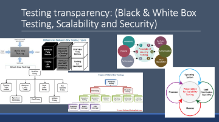
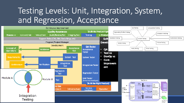
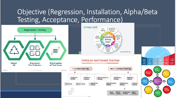
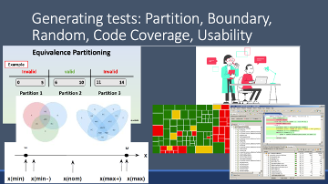
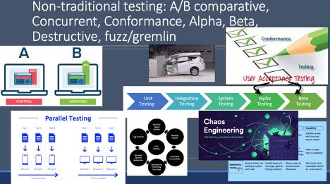

This week we will learn about different techniques employed by testers to create better test cases.
Objectives
By the end of the week, each student will be able to:
- Research testing techniques.
- Present findings in a way that is easily understood by others.
- Describe different testing techniques.
Plan of the Week
This week, we will complete the following activities:
- Read one article.
- Receive a testing technique assignment from the instructor. The instructor will contact each team for a testing technique assignment.
- Research the testing technique. With your partner, find sources describing how your testing technique works.
- Create a presentation. With your partner, create a slide deck describing your testing technique. Record a video consisting of you and your partner presenting the slide. Post your video on a streaming service such as YouTube.
- Create quiz questions. With your partner, create three test questions covering the most critical aspects of your testing technique.
- Watch all the presentations. Individually, watch all the video presentations.
- Take the testing technique quiz.
Note: We have had some comments that the students are making up the course content for this week. At the surface, it can be perceived that way. This is one of many teaching techniques in Bloom’s taxonomy, teaching methods found here at BYU-Idaho, and part of our learning model. The research and presentation summarize (Blooms level 5) of the content. You will be asked to research tools, technologies, and software in the workplace and present that information in a team or customer meeting. The quiz questions and quiz are the assessment portion of the assignment.
Topics:
The topic will be based on the size of the class. Please look for instructions and assignment from your instructor:
- Testing transparency:
- Black & White Box Testing,
- Performance,
- Scalability and Security
- 
- Testing Levels:
- Unit,
- Integration,
- System
- 
- Objective
- Regression
- Installation
- Alpha/Beta Testing
- Acceptance
- Performance
- 
- Generating tests:
- Partition,
- Boundary,
- Random,
- Code Coverage,
- Usability
- 
- Non-traditional testing:
- A/B comparative,
- Concurrent,
- Conformance,
- Destructive,
- fuzz/gremlin
- 
- Other Testing
- Reliability Achievement/Evaluation
- Stress, Back-to-back, recovery
- Interface/Configuration
- Usability and HCI Testing
- Formal method